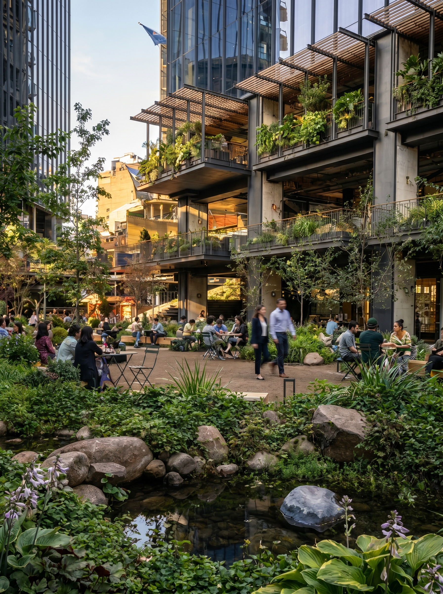

Caso Estratégico · Uso Mixto
El Jardín — Mercado Urbano Tobalaba
Diseño y ejecución del paisajismo en el Mercado Urbano Tobalaba, desarrollo de uso mixto con certificación LEED Platino. Plant Art construyó e integró el jardín central del proyecto y opera su mantención desde la apertura en 2023.
Año de apertura
2023
Tipo de activo
Uso mixto
Certificación
LEED Platino
Estado
Activo
Diseño de jardín
Ejecución
Mantención continua
Riego automatizado
Reconocimiento del proyecto
Activo reconocido con el ULI Americas Awards for Excellence 2025 como único proyecto latinoamericano ganador de su categoría.
Premio otorgado al proyecto MUT / Territoria. Plant Art es el ejecutor y operador del paisajismo.